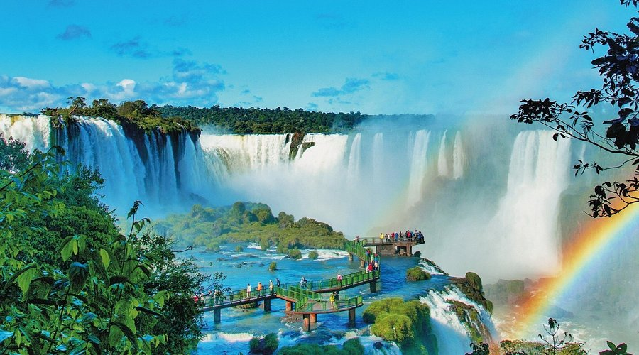
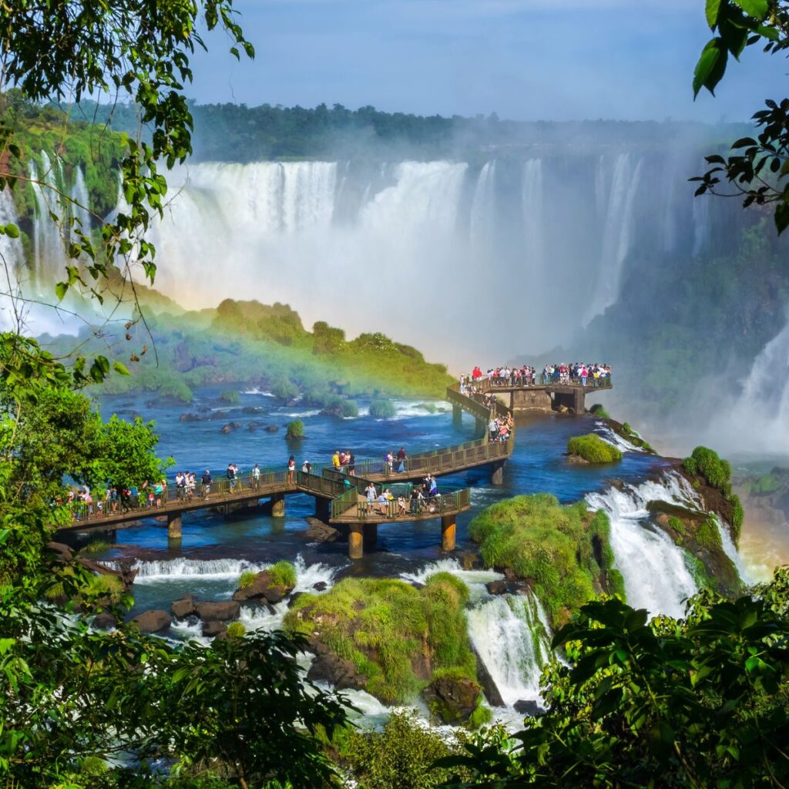
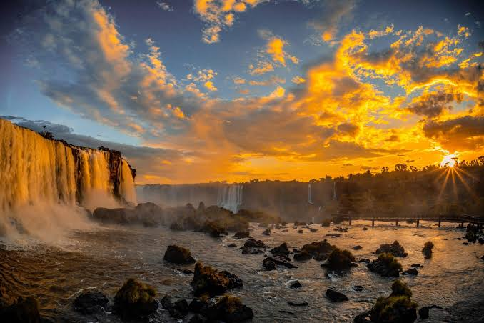

Cataratas do iguaçu, uma das maravilhas do paraná
As Cataratas também ajudam a valorizar a história e a natureza local. O turismo incentiva a preservação do Parque Nacional do iguaçu e fortalece a importãncia de proteger a biodiversidade para as próximas gerações .

Importẫncia cultural
As caracteristicas do Iguaçu fazem parte da identiade cultural do Paraná e são um dos principais símbolos do estado. Elas atraem pessoas de diferentes lugares, contribuindo para a troca de culturas e para a valorização da região.

As Cataratas do Iguaçu fazem parte da identidade cultural do Paraná e representam a relação entre a população e a natureza. Também estão ligadas lendas, histórias e tradições locais, além de aproximarem as culturas brasileiras e indigenas. Eles são, portanto, um importante símbolo cultural da região

Curiosidades
Curiosidades das Cataratas o Iguaçu
Ela fica entre Brail e Argentina, e podem ser vistas pelo dois países, que possuem parques nacionais para proteger a região.
Curiosidade 2
As Cataratas do Iguaçu formam o maior conjunto de quedas d'água do mundo, com cerca de 275 saltos que chegam a 80 metros de altura.
Memória
Vou compartilhar imagens sobre as Cataratas do iguaçu
